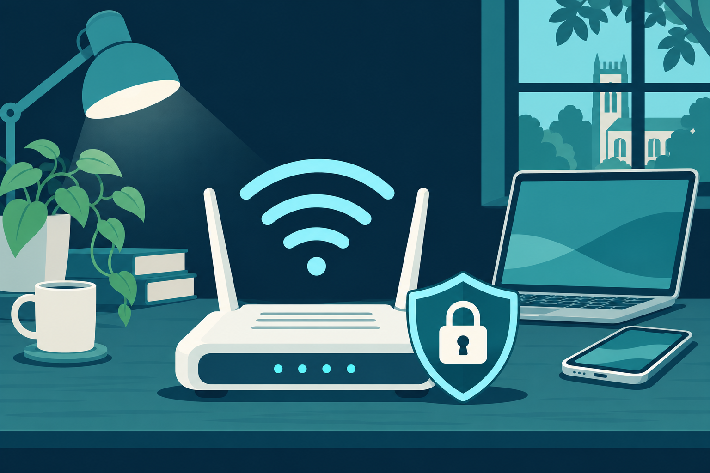

Securing your home router
Check the settings on the router you manage at home. This guide is about your own network, rather than connecting to public Wi-Fi.

Reviewing the security of your home network.
Settings worth checking
Open the router settings using your provider’s or manufacturer’s instructions. On a university or shared building network, ask the administrator instead of changing the equipment yourself.
| Setting | What to check |
|---|---|
| Administrator login | Replace any default administrator password. This controls the router settings; it is separate from the password used to join Wi-Fi. |
| Wireless security | Use WPA3 where supported, or WPA2. Disable WPS if you do not need it. |
| Guest network | Use a separate guest network for visitors. Check its isolation settings rather than assuming the name “guest” guarantees separation. |
| Remote management | Disable administration from the internet if you do not use it. |
After the first setup
Enable automatic firmware updates if available. Check whether the manufacturer still supports your model; an old router may no longer receive security fixes.
For the general advice behind these settings, see password hygiene and software updates.